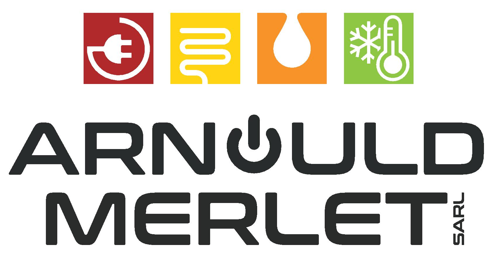
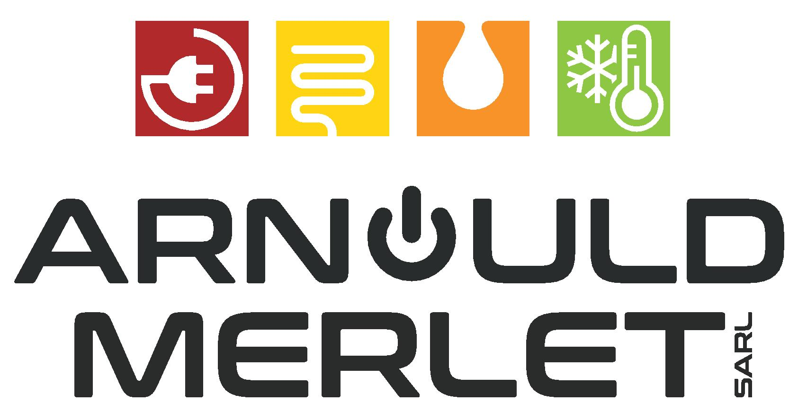
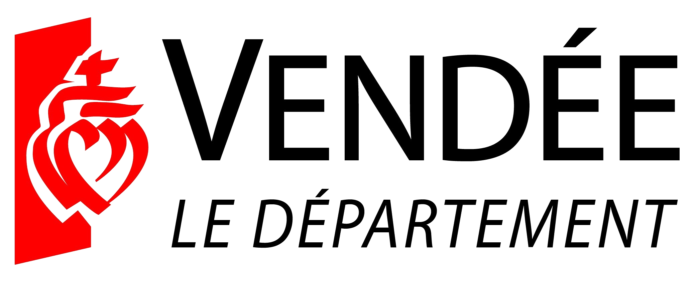
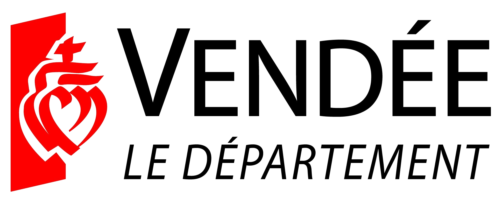

L'association Saint Martin Course Aventure
L'association

L'association SMCA a pour but de promouvoir la pratique de la course à pieds dans un esprit de convivialité sur Saint martin des Noyers et ses alentours. Notre association compte environ 30 membres et le bureau est composée de :
- Le président : Marc X
- La secrétaire : Laura X
- La secrétaire adjointe : Dorothée X
- La trésorière : Marie-Hélène X
- Le trésorier adjoint : Christophe X
- Et ses membres : Fabien X, Steven X, Fabrice X, Alex X, Jérémy X, Charles X, Jean-René X, Benjamin X, Sylvie X, Bruno X, Romane X, Salomé X, Jean X, Roger X, Véronique X, Catherine X, Bertrand X, Nicolas X, Jean-Pierre X, Philippe X, Ludovic X, Carole X, Mireille X et Patrick X
Notre fonctionnement
Quels entrainements ?
Au cours de l'année, des sorties hebdomadaires sont programmés chaque semaine. Soit le mercredi soir à 18h30 et le dimanche matin à 10h. Le rendez-vous se fait à la salle de sport de St martin et la règle est que tout le monde part ensemble ! En règle générale, il n'y a pas de parcours pré définis, ni de programme, cela ce décide selon la météo et la forme de chacun. Des groupes de niveaux se répartissent afin que chacun puisse courir à son rythme sans se fatiguer trop vite ! Cependant quelques règles s'imposent à tous :
- Quelque soit le niveau, personne ne court seul, il y a toujours quelqu'un pour l'accompagner
- Les plus en forme d'un groupe attendent les autres en hauts des côtes.
Quels équipements ?
Le seul impératif est de courir avec de "vraies" chaussures de running. C'est important pour votre santé. Pour l reste c'est comme bon vous semble, les nouveaux adhérents peuvent commander des équipements au couleurs et logo du club.
Quels parcours ?
Les parcours que nous emrpuntons se situent sur Saint Martin des Noyers et ses alentours (Sainte Cécile et Saint Hilaire-le-Vouhis). Le plus souvent se sont des chemins ou routes très peu fréquentées. La plupart peuvent être empruntés toute l'année et quelle que soit la météo.
Quels types de courses ?
Il y a différentes types de courses tout au long de l'année, que ce soit des trails, en nature ou sur la route pour pouvoir convenir a tout le monde. Certaines courses sont partiulièrement ciblées par le club dans un esprit de artenariat ou pour générer un esprit d'équipe lors des compétitions.

Merci à nos partenaires !

 

 
